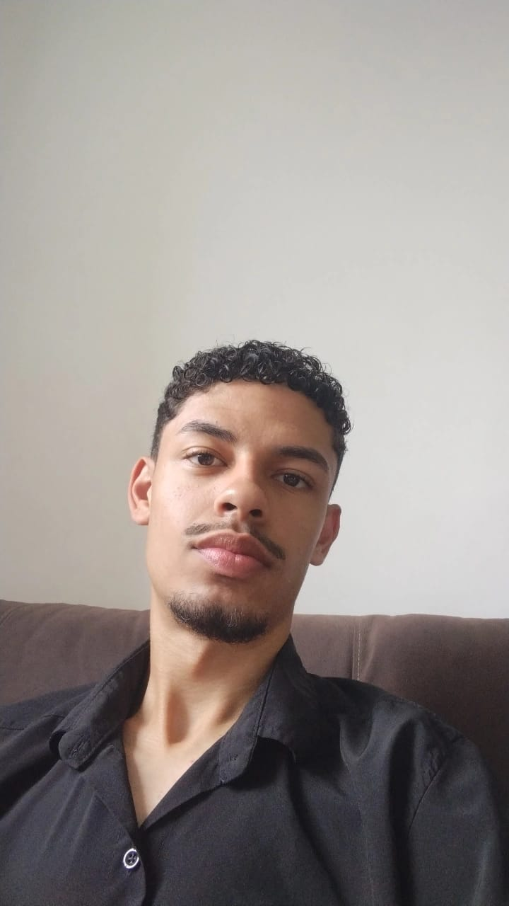

Dados Acadêmicos
Faculdade: Fatec (Centro Paula Souza)
Curso: Desenvolvimento de Software Multiplataforma (DSM)
Início: 2024 / 1º Semestre
Previsão de Conclusão: 2027 / 1º Semestre
Experiência Profissional
Assistente administrativo
GT3 AutoParts | Início: Mai/2024 — Atual
Emissão de notas fiscais e etiquetas de pedidos de peças automotivas.
Estagiário de TI
Colégio Satélite | Início: Jan/2023 — Desligamento: Dez/2023
Suporte técnico e montagem de computadores.
Idiomas
- Português: Nativo
- Inglês: Básico
Projetos dos Semestres
Obs: O 7º semestre não possui projeto integrador.
Projeto Reciclar
Um site informativo de conscientização sobre reciclagem.
Fatec SALA
Um site para a gestão de laboratórios, salas e o agendamento de aulas.
Define Pilates
Um sistema para gerenciar as atividades de um estúdio de pilates.
DRI'AH Ateliê
Um sistema para atender as necessidades de um ateliê.
VEM Doar
Um aplicativo de marketplace para doações de itens.
Limp Ecologic
Um sistema para gestão de uma empresa de higienização de estofados.